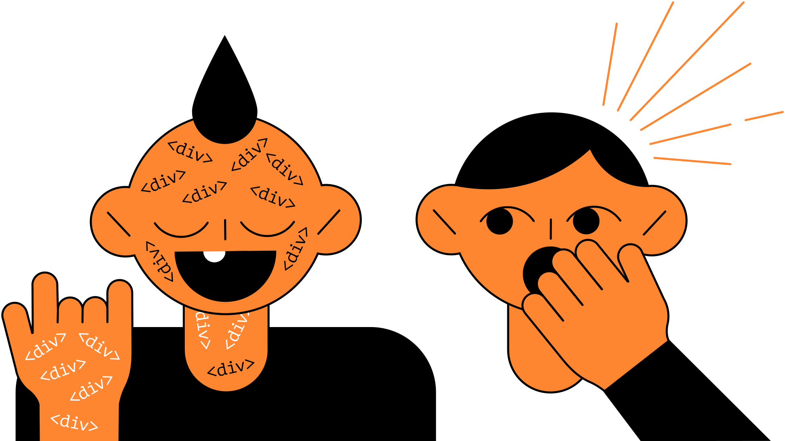
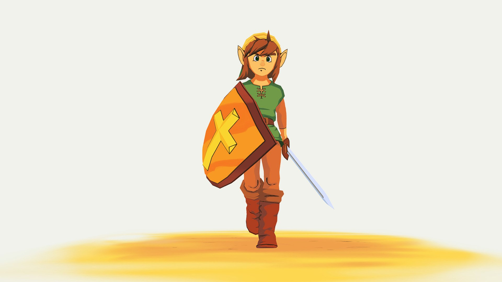
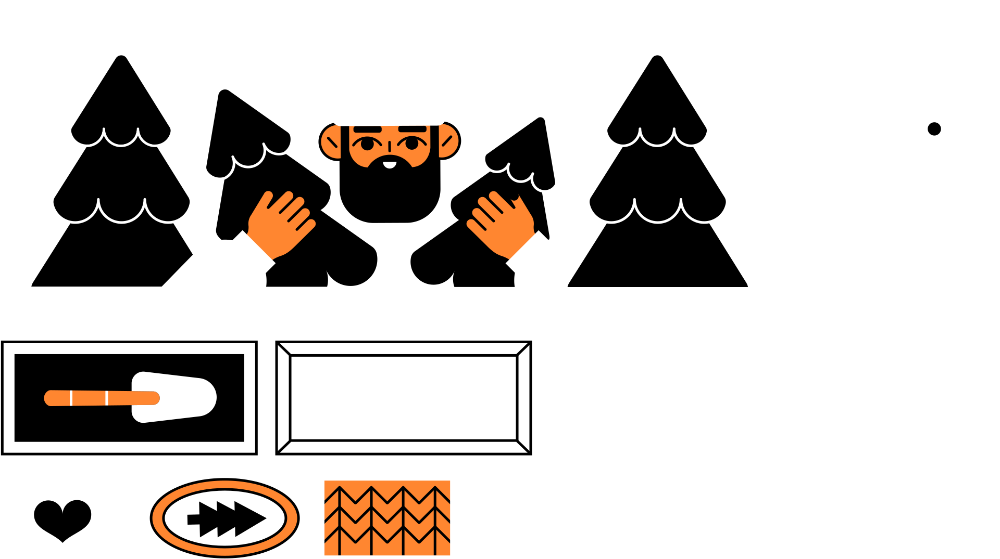
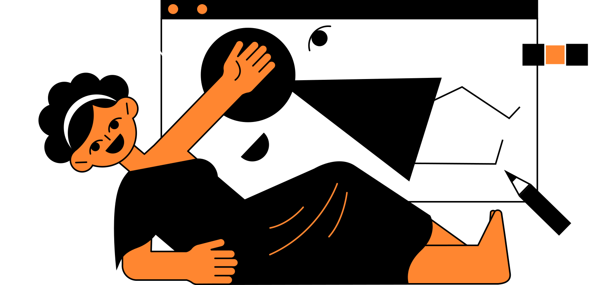
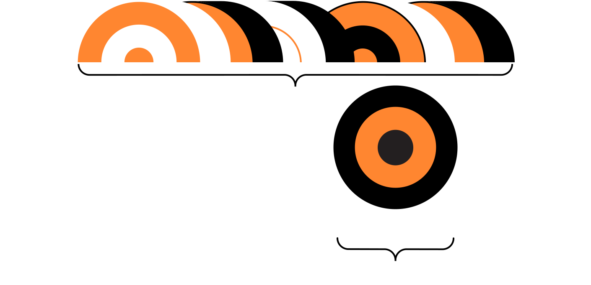
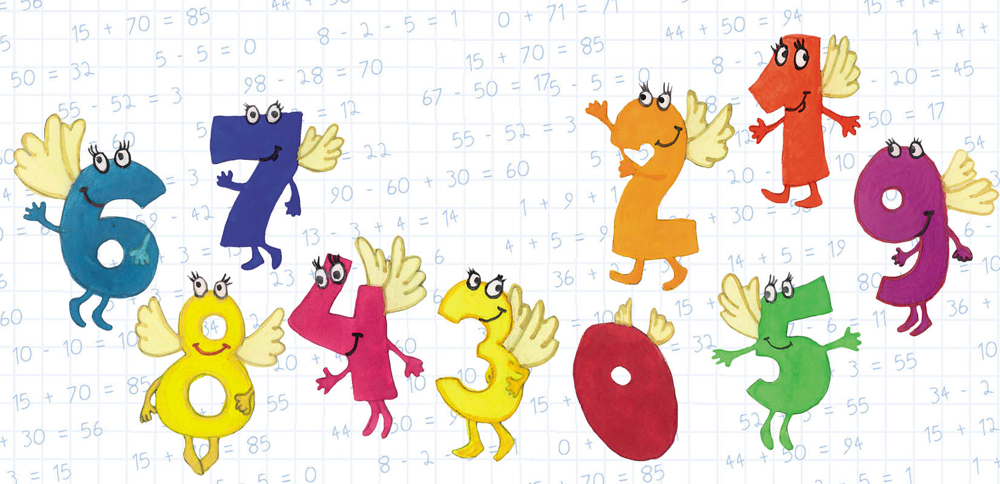
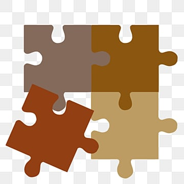

Як HTML-теги живуть своїм життям: секрети закулісся веб-сторінки
Швидкий доступ
Ви коли-небудь замислювалися, як почуваються HTML-теги на веб-сторінці?
Вони живуть своїм життям, мають характери та навіть влаштовують суперечки між собою!
Давайте зазирнемо за лаштунки коду і дізнаємося, хто тут головний.
DIV
<div> — скромний трудяга, якого всі недооцінюють
- Якби у веб-розробці була номінація "Найчастіше використовуваний, але ніколи не визнаний", точно взяв би перше місце.
- Він ні на що не скаржиться, просто працює. Але іноді бурчить собі під ніс: "Може, хоч раз ви мене заміните на щось семантичне?"
-
Всі хочуть щось конкретне, а я можу бути чим завгодно!
- Контейнер~? Звісно! Фон? Легко! Шаблон? Я — універсальний!
- Просто розкласти елементи на сторінці? Ось я і приїхав!
- Завжди готовий зробити все, але ніхто не помічає, поки не почне все валитися.
A
<a> — невтомний мандрівник та майстер зв’язків
HTML-теги живуть своїм життям, і деякі з них обожнюють подорожі.
- <a> це той самий друг, який завжди каже:
- <a> любить пригоди, і особливо він кайфує від режиму "відкрити в новій вкладці":
-
Тег <a> — це як друг, який каже:
- Тут дуже корисна інформація! Натискай!
- Але іноді він може завести не туди...
- …і ось ти вже слухаєш Rick Astley – Never Gonna Give You Up.
-
Іноді <a> буває хитрим: він обіцяє перевести тебе кудись,
але насправді... зникає!
- Ой, здається, я забув, куди йшов...
- Це як коли ти заходиш на кухню і не пам’ятаєш, навіщо.
- Я — той, хто завжди веде тебе кудись, навіть якщо ти не знаєш куди.
-
Я зв’язую весь інтернет, але мене все одно клікають, не читаючи,
що там написано!
- Люди клікають по мені швидше, ніж читають заголовки. Ну гаразд, удачі тобі на випадковому сайті!
- Я можу вести до корисної статті, а можу на "купи негайно!" а можу зовсім послати тебе на "404". Обережно, я непередбачуваний!
H1...H6
<h1>-<h6> — це як велика родина, де старший – головний, а молодших постійно ігнорують.
<h1> — головний, у нього голос найгучніший:
- Я – король сторінки. Без мене все виглядає несерйозно!
- Якщо ти зробиш мене двічі на сторінці – SEO-шники тебе проклянуть!
<h2> — заступник, але без слави:
- Якщо <h1> – це президент, то я прем’єр-міністр, який працює, але ніхто не дякує.
- Я створений для підзаголовків, але таємно хочу бути <h1>.
<h3> — ведучий місцевих новин:
- Я ще тримаюся, але вже не так голосно.
- Ви мене читаєте? Чесно?
- Якщо <h2> – це заступник, то я… заступник заступника.
<h4> — Слухай, може, вже досить?
- Ніби ще заголовок, але в браузері я виглядаю як звичайний текст...
- Мене використовують, коли потрібно просто щось підписати, а не виділяти.
- Веб-розробники зазвичай дивляться на нього і думають:"Може, просто зробити<strong>?
<h5> — зникаючий заголовок
- Мене видно лише під мікроскопом.
- Веб-дизайнери навіть не знають, що я існую.
<h6> — просто RIP
- Я – заголовок, але уявний.
- Розробник, який використовує мене, точно у відчаї.
Наступного разу, коли верстатимете сайт, не забувайте: заголовки теж мають почуття!
P
<p> – це справжня робоча конячка HTML!
- Я той, кого тут найбільше, але ніхто мене не помічає.
- Я – те, що люди читають, поки шукають кнопку "Пропустити".
- Якщо ти об'єднаєш мене з <br>, верстальники викличуть поліцію.
- Я мрію бути яскравішим, мати анімацію чи хоча б інший шрифт. Але ні. Мені дають тільки Arial і максимум трохи padding.
<p> – це найскромніший, але найпотрібніший тег. Наступного разу, коли ти його використовуєш, дай йому трохи стилю! Він це заслужив!
BR
<br> –це справжній хуліган HTML. Він просто ламає все на своєму шляху і навіть не вибачається!
-
🚧 Ламає рядки без попередження
- Не подобається структура тексту? Я просто візьму і зламаю її!
- Ви не бачили мене, але я тут. Просто подивіться на наступний рядок.
- Пауза, бо я так сказав.
-
😈 Поганий хлопець у світі HTML
- Кожен верстальник має чорний список. Я в топі.
- Чистий код? Не чув про таке
- Професіонали використовують margin-bottom, а я просто роблю свою справу.
- Браузер поважає мене, а ось фронтендери – ні.
І не став <br><br> взагалі – це пряма дорога до верстального пекла. 😆
IMG
<img> – модель, яка любить увагу
-
Виглядає добре, але не завжди на місці
- Я можу зробити будь-яку сторінку красивою. Потрібен лише файл зображення і трохи HTML.
- Моє життя — це вічне оновлення кешу.
- Ти хочеш зображення? Я принесла! А розмір? О, це вже твої проблеми.
-
Вічний джерело проблем
- Я ніколи не завантажуюсь так швидко, як ти хочеш.
- Я ж не диван для тріщин у дизайні! Якщо зображення не завантажується, я вам покажу зламану картинку. Я ж теж маю свою гідність!
- Що таке alt? Це моє здоров’я. Якщо не буде цього атрибута, я почну хворіти, і нікто не здогадається що там було.
UL OL LI
<ul> — Майстер безладу з елементами порядку
-
Чемпіон Хаосу: «Маркери — все!
- Я справжній прихильник хаосу. Я не хочу ніяких правил і стандартів, я люблю свободу! "Маркер тут, маркер там", — думає він, кидаючи маркери без жодної логіки або порядку.
- Я не нумерую, не класифікую — я просто ставлю маркери, хай люди самі розбираються!
-
Гнучкий і непередбачуваний
- Я не вибираю стиль. Я просто є!
- Іноді я виглядаю елегантно, а іноді – як список покупок бабусі.
- CSS мене приборкує, але іноді я вириваюся на волю!
- Я даю вибір, а не диктую правила. На відміну від мого надто серйозного брата <ol>.
<ol> — Список з принципами: «Тут усе за правилами!»
-
Педант від природи
- У мене є правила. І ти їх дотримуватимешся.
- Я — список, який знає, що таке дисципліна.
- Випадковий порядок? Тільки через мій <ol>!
- Без мене ніякі топ-10 списки не існували б!
<li> — Цеглинка списків: маленький, але незамінний!
- Я розриваюся між <ul> і <ol>, не знаючи, на чиєму я боці. Але точно знаю: без мене не обійдеться!
- Хоча б раз дайте мені свободу… хоча ні, я не створений для хаосу.
- Я можу бути будь-чим! І пунктом меню, і чек-листом, і навіть жартом.
- Поки <ul> і <ol> сперечаються, я просто виконую свою роботу.
🎭 Мораль історії:
Кожен тег у HTML має свою роль. Вони можуть сперечатися, жартувати та навіть ламати верстку, але разом створюють справжню магію веб-сторінок.
І пам’ятайте, дорогі розробники: код – це не просто робота, це цілий театр, де HTML-теги грають свої ролі. А ви – головний режисер! 🎬